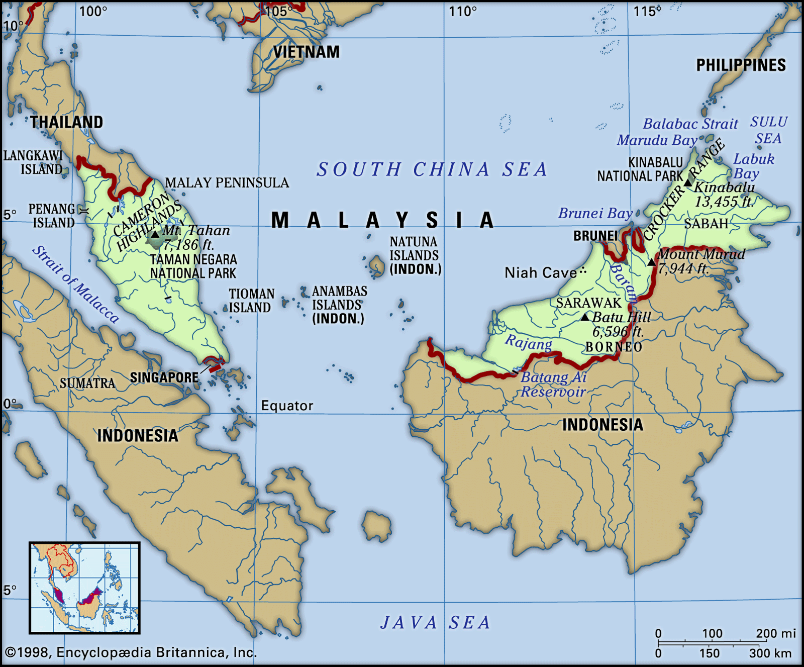
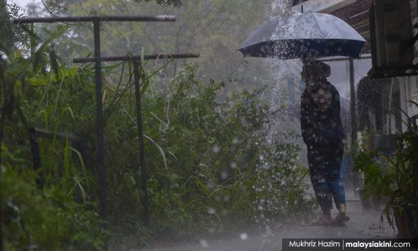
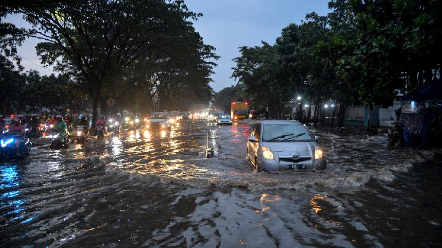
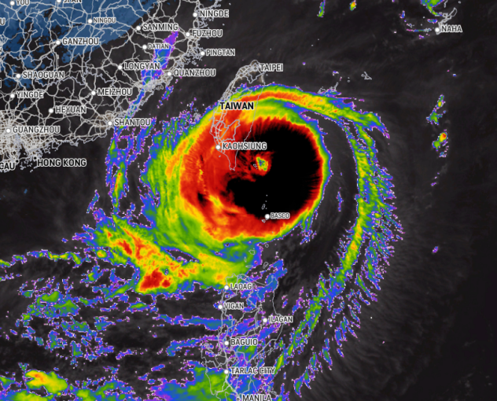

Tropical
-
Indonesia and Malaysia share remarkable similarities in their weather patterns, both being situated in the equatorial region, thereby experiencing a tropical climate.
The equatorial location ensures consistent temperatures throughout the year, with minimal seasonal variations.
 -
Both countries encounter high temperatures and humidity levels, creating a warm and tropical ambiance.
The presence of dense rainforests further contributes to the perpetually green landscapes in both nations.
The tropical climate also results in a distinct wet and dry season, characterized by heavy rainfall during the monsoon period.
 
Heavy Rain in MalaysiaFlood in Indonesia. - These shared climatic features make Indonesia and Malaysia prone to similar weather phenomena, such as tropical storms and cyclones, while fostering lush biodiversity in their ecosystems. The prevalence of such a climate not only shapes the physical geography of the two countries but also influences the lifestyles and cultures of their inhabitants.
-
Unlike Indonesia and Malaysia, Taiwan undergoes more noticeable temperature variations throughout the year.
Summers are hot and humid, with the possibility of typhoons, while winters are milder and cooler.
Spring and autumn bring more temperate conditions, making Taiwan distinct from the perpetual warmth found in the equatorial climates of Indonesia and Malaysia.

Typhoons Koinu static image of Taiwan